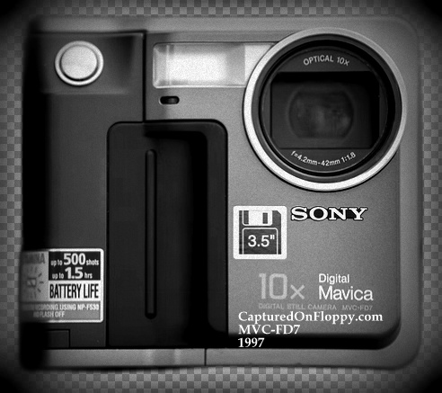
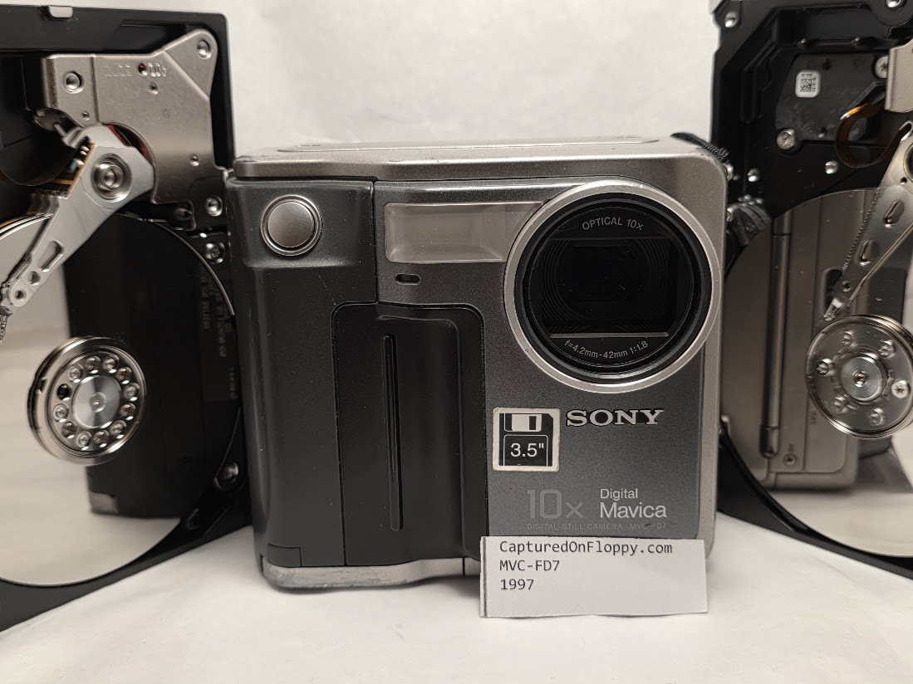

Mavica FD7 1997
| Flickr
Instragram
Twitter
Floppy Reddit
Floppy Youtube FloppyCameras.com |

[Captured On Floppy ]

[Captured On Floppy ]
About the FD7
The Sony Mavica™️ MVC-FD5—focused on its introduction, context, and technical significance, strictly excluding the FD7:
Sony Mavica™️ MVC-FD5: Historical & Technical Overview
Introduction & Historical Context
- Release: Late 1997 (sometimes referenced in 1998), marking the launch of Sony’s digital Mavica line.
- Significance: First digital camera in the Mavica series, building on Sony’s legacy from the original analog Mavica prototype (August 1981), which recorded still video images on 2-inch Video Floppy (VF) disks.
- Storage Innovation: The FD5 was the first Mavica to use true digital image capture and storage, leveraging the ubiquitous 3.5-inch floppy disk format Sony had helped popularize since 1982. This choice reflected the prevalence of floppy disk drives in late-1990s computers, allowing easy, cable-free image transfer.
Technical Specifications
| Feature | Details |
|---|---|
| Sensor | 1/4" CCD, 640×480 pixels (VGA) |
| Lens | 4.8mm f/2.0 (47mm equiv., 35mm) |
| Storage | 3.5" 1.44MB floppy disk |
| Image Format | JPEG (two compression levels) |
| Battery | NP-F530 Lithium Ion (shared with Sony camcorders) |
| Display | 2.5" LCD monitor |
| Release Price | ~$600 USD (late 1997) |
| Inflation Adj. | ≈ $1300 in today’s money (2025) |
Design & User Experience
- Body Shape: Large and square, dictated by the need to house the floppy disk mechanism.
- Lens: Fixed-focus, equivalent to a standard 47mm field, with macro slider for close-ups. No zoom.
- Image Storage: JPEG files, 20–40 per floppy disk, echoing the capacity of typical film rolls.
- Ease of Use: No proprietary memory cards; users could buy inexpensive, widely-available floppies.
- Companion Model: The FD5 was introduced alongside the MVC-FD7, which offered advanced features such as a 10x zoom—but the FD5 remained the entry-level, fixed-lens model.
Impact & Legacy
- Digital Milestone: The FD5’s use of mainstream storage media and fully digital imaging made it a pivotal product in the consumer camera market.
- Price & Accessibility: At ~$600, it was a premium item in 1997, yet far more accessible than professional digital cameras of the time.
- Transition: Helped bridge the gap for users moving from analog or film to digital photography, making the process familiar and portable.
Manual & My Opinion
Download the official manual (PDF)
My Opinion:
[Write my personal comments or experience with this model here.]